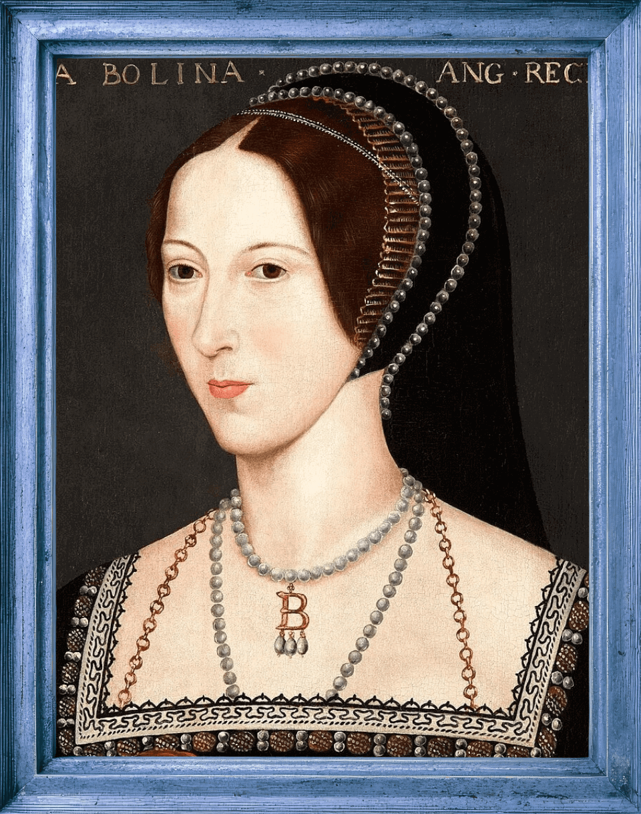
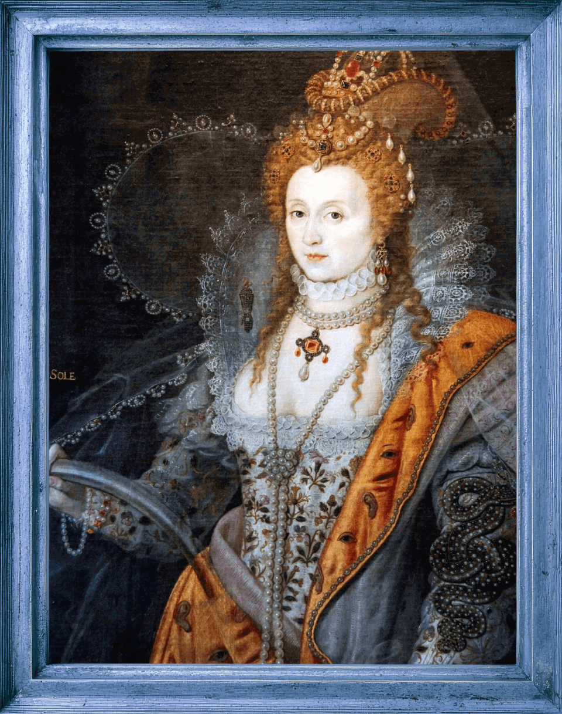

Anne Boleyn was the daughter of well-respected English courtier, Sir Thomas Boleyn and noblewoman, Elizabeth Howard, daughter of the 2nd Duke of Norfolk (this relative will totally be relevant later, I promise).
She was the middle of three children, with an elder sister, Mary, and younger brother, George. They were primarily raised in the English Countryside at Hever Castle until at the age of approximately 12 years old.
She first served as a Maid of Honor at the court of Margaret of Austria, who was then the Regent of the Netherlands and was later called to France to serve as a lady-in-waiting to Mary Tudor, who was to marry the then ancient king of France.
Not surprisingly, the old king died shortly after the wedding and Mary Tudor hastily remarried Charles Brandon and fled back to England.
At this time, Anne chose to stay behind in France to continue to her work and education, until she was called back to England in 1522 to take her place at the court of Henry Tudor.
English Homecoming
Upon returning to court, Anne learned that her sister Mary had become the mistress of the king. It was at this time that her mother, father, and her good old Uncle Norfolk (who had inherited the title from Anne's grandfather and was close to Henry VIII)
counseled Anne to assist her sister, Mary, in all endeavors concerning the King to keep her in his bed as long as possible. It was well known that Henry was generous with his current mistress's families,
granting them lands and funds as it pleased him, and giving them high positions and considerable influence in matters of state. Therefore, as well as serving Queen Catherine as a lady-in-waiting, her instructions were to keep Mary motivated to keep the King happy.
In 1523, not too long after Anne's arrival on the scene, Mary discovered she was pregnant. She was allowed to stay at court until her predicament became obvious, at which time, she was sent back to Hever until her child was born.
Never fear, though! In those days, having the King's illegitimate child was almost as good as giving birth to a legitimate heir, especially if it was a boy, as evidenced by the love and riches he had already heaped upon his son, Henry FitzRoy, born in 1519 to Henry's then mistress, Bessie Blount.
However, the Boleyns and Howards were at a loss. How could Mary keep the King's fickle attention and affection if she weren't there in person, thereby continuing the prizes the King was so apt to give them?
Enter Anne Boleyn, Ladies and Gents.
She might not have begun a quest to win the King's affections, but she certainly took the court, and then the whole world by storm. Her original intention (as I have been made to understand) was to keep the King's attention and affection held for Mary's return.
However, banter turned into flirtation, flirtation turned into the King's obsession, and that obsession morphed into what we now know as King Henry's "Great Matter."

Posthumous portrait at Hever Castle with notorious necklace, c. 1583
Anne Boleyn is one of the most notorious historical figures; almost as notorious as Henry himself, and she has a bad rep. Was she really all bad? Or was she a victim of her family's plotting and ambition? You decide!
Queenly Stats:
Born:Blickling Hall, Norfolk, England
Married:Publicly on Jan 25, 1533
Reigned:Queen of 1,000 Days
Divorced:May 17, 1536
Children:Reigned the longest of Henry's Children
Died:Executed at the Tower of London (Tower Green)
Click on any Category to Get Stats
Heirs
Okay, we may be a little biased, but seeing as how she held the track record for the longest reign in British history until very recently, Elizabeth I deserved an entire gallery!
One of Anne's so called "tactics" or promises that she made Henry before he married her, was that she would be able to give Henry his longed-for son and heir. However, although she
did prove herself to be fertile, as evidenced by her pregnant belly at her secret marriage ceremony, she would ultimately fail to win the ultimate prize.
But, really. Did she fail?
Many people discounted Elizabeth when she was born. After all, even though by this time Henry had removed her from the line of sucession, the King already had an older daughter, Mary.
The assumption was that Mary and Elizabeth would be married off elsewhere in the future to form alliances for their father. When Henry annulled his marriage with Anne Boleyn, he also stripped Elizabeth of her title of Princess and removed her from the succession.
His reasoning was that he couldn't be sure that (despite the uncanny resemblance to each other) Elizabeth was really his daughter, considering all that her mother had been accused of.
Elizabeth, however, got the final laugh, reigning as the undisputed Queen of England for 44 years, beginning in 1558, after having waited for her turn in the line of sucession once Henry VIII died in 1547.
Queen Elizabeth Tudor I
Reign: 1558-1603
The Darnley Portrait, c. 1575, unknown artist.

The Rainbow Portrait, Isaac Oliver, c. 1600. the Coronation Portrait, c. 1600, unknown artist The Ermine Portrait, c. 1585, likely by William Segar.